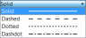

Manuel
de
FreeCAD

Ce manuel traite des Outils de création d'objets.
Part Design
Outils de création d'objets solides
Description
L'outil Protrusion extrude une esquisse sélectionnée dans une direction normale au plan de l'esquisse. À partir de la v0.17, les faces sur un solide peuvent également être utilisées.

L'esquisse (A) est montrée à gauche ; le solide résultant de l'opération de protrusion (B) est à droite.
v0.16 et antérieures Si l'esquisse sélectionnée est appliquée sur la face d'une solide existant ou d'une autre fonction Part Design, la protrusion sera fusionnée au solide.
Utilisation
- Sélectionner une esquisse. Sous v0.17 et ultérieures, une face du solide peut également être utilisée.
- Cliquer sur le bouton
 Protrusion.
Protrusion. - Définir les paramètres de protrusion (voir section suivante).
- Cliquer sur OK.
Options
Lors de la création de la protrusion, la vue combinée bascule automatiquement à l'onglet Tâches, qui affiche le dialogue « Paramètres de protrusion ».

Type
Offre 5 différentes façons de définir la longueur de la protrusion.
Dimension
Permet de saisir une valeur numérique pour la longueur de la protrusion. La direction par défaut de la protrusion est vers le haut du plan d'esquisse, mais cela peut être changé en cochant la case Inversé. La protrusion s'effectue normale au plan de l'esquisse. L'option Symétrique au plan étendra la protrusion à la moitié de la longueur saisie de chaque côté du plan d'esquisse. Les dimensions négatives ne sont pas permises, utilisez plutôt l'option Inversé.
Deux dimensions
Permet de saisir une seconde valeur de longueur pour prolonger la protrusion dans la direction opposée (à travers le support). La direction peut également être changée avec l'option Inversé.
Au dernier
La protrusion sera prolongée jusqu'à la dernière face rencontrée dans la direction d'extrusion. S'il n'y a aucun support rencontré, un message d'erreur apparaîtra.
Au premier
La protrusion sera prolongée jusqu'à la première face rencontrée dans la direction d'extrusion. S'il n'y a aucun support rencontré, un message d'erreur apparaîtra.
Jusqu'à la face
La protrusion sera prolongée jusqu'à la face sélectionnée du support. La face est sélectionnée en cliquant sur le bouton Face, puis en cliquant sur la face désirée dans la vue modèle. S'il n'y a aucun support, aucune sélection ne sera allouée.
Longueur
Définit la longueur de la protrusion. Plusieurs unités peuvent être utilisées, indépendamment des préférences de l'utilisateur (m, cm, mm, nm, ft ou ' pour pieds, in ou " pour pouces).
Symétrique au plan
Cocher la case pour prolonger la moitié de la longueur définie de chaque côté du plan d'esquisse.
Inversé
Inverse la direction de la protrusion.
Propriétés
- DONNÉESRefine (affiner): v0.17 et ultérieures true (vrai) ou false (faux). Nettoie les arêtes résiduelles laissées par l'opération. Cette propriété adopte initialement les réglages de l'utilisateur (qui se retrouvent sous Préférences → Conception de pièce → Général → Paramètres de modèle). La valeur peut être changée par la suite. Elle sera sauvegardée dans le document FreeCAD.
Limitations
- Comme toutes les fonctions Part Design, la Protrusion créé un solide, l'esquisse doit par conséquent inclure un profil fermé ou elle échouera. Il peut y avoir plusieurs profils fermés à l'intérieur d'un profil fermé plus grand, pourvu qu'aucun des profils ne s'entrecroise (par exemple, un rectangle avec deux cercles à l'intérieur sera valide).
- L'algorithme utilisé pour Au premier et Au dernier fonctionne ainsi :
- Il crée une ligne passant par le centre de gravité de l'esquisse ;
- Il trouve toutes les faces du support coupées par cette ligne ;
- Il choisit la face la plus près/la plus loin du point d'intersection de l'esquisse.
- Cela veut dire que la face trouvée pourrait ne pas être celle attendue. Si vous faites face à ce problème, utilisez plutôt le type Jusqu'à la face et sélectionnez la face désirée.
- Dans le cas très spécifique d'une protrusion sur une surface concave, où l'esquisse est plus grande que cette surface, la protrusion échouera. Il s'agit d'un bogue non-résolu.
- v0.16 et ultérieures Il n'y a pas de nettoyage automatique des surfaces planaires adjacentes pour former une seule surface. Vous pouvez corriger cela manuellement dans l'atelier Part (Pièce) avec l'outil Affiner la forme (qui créé un solide non-associatif et non-paramétrique) ou encore avec une fonction d'affinage de la forme de l'atelier OpenSCAD qui créé une fonction paramétrique.
|
| Emplacement du menu |
|---|
| PartDesign → Cavité |
| Ateliers |
| PartDesign, Complet |
| Raccourci par défaut |
| Aucun |
| Voir aussi |
| Protrusion |
Description
L'outil Cavité découpe un solide en extrudant une esquisse en ligne droite et en soustrayant le volume ainsi créé du solide.

Le profil d'esquisse (A) a été appliqué sur la face de dessus du solide (B) ; le résultat après l'opération de cavité est montré à droite.
Utilisation
- Sélectionner une esquisse.
- v0.16 et antérieures Celle-ci doit être appliquée sur la face planaire d'un solide ou d'une fonction PartDesign existant, sinon un message d'erreur apparaîtra.
- Cliquer sur le bouton
 Cavité.
Cavité. - Définir les paramètres de cavité (voir section suivante).
- Cliquer sur OK.
Options

À la création d'une cavité, le dialogue Paramètres de cavité offre cinq façons différentes de définir la longueur (profondeur) à laquelle la cavité sera extrudée :
Dimension
Permet de saisir une valeur numérique pour la profondeur de la cavité. La direction par défaut de la cavité est vers le haut du plan d'esquisse. L'extrusion s'effectue normale au plan de l'esquisse. Les valeurs numériques négatives ne sont pas allouées.
Au premier
La cavité sera prolongée jusqu'à la première face rencontrée dans la direction d'extrusion. Autrement dit, elle coupera à travers le solide jusqu'à ce qu'elle atteigne un espace vide.
À travers tout
La cavité coupera à travers tout le solide dans la direction d'extrusion. Avec l'option « Symétrique au plan », la cavité coupera à travers tout dans les deux directions.
Jusqu'à la face
La cavité sera prolongée jusqu'à la face sélectionnée du support. La face est sélectionnée en cliquant sur le bouton Face, puis en cliquant sur la face désirée dans la vue modèle.
Deux dimensions
v0.17 et ultérieures Permet de saisir une seconde valeur de longueur pour prolonger la protrusion dans la direction opposée (à travers le support). La direction peut également être changée avec l'option Inversé.
Limitations
- Utilisez le type Dimension ou À travers tout dans la mesure du possible, car les autres types peuvent parfois causer problème quand la cavité est utilisée pour une répétition linéaire ou circulaire.
- Autrement, la fonction cavité partage les mêmes limitations que la fonction protrusion.
Liens utiles
Un exemple pratique sur le forum (en anglais).
|
| Emplacement du menu |
|---|
| Part Design → Révolution |
| Ateliers |
| PartDesign, Complet |
| Raccourci par défaut |
| Aucun |
| Voir aussi |
| Aucun |
Introduction
Cet outil produit un solide par révolution d'une esquisse ou d'un objet 2D sélectionné autour d'un axe donné.

Ci-dessus : l'esquisse (A) est révolutionnée de 270 degrés dans le sens antihoraire autour de l'axe (B) ; le solide résultant (C) est montré à droite.
Utilisation
- Sélectionner l'esquisse à révolutionner. v0.17 et ultérieures Une face du solide peut également être utilisée.
- Appuyer sur le bouton Révolution.
- Définir les paramètres de la révolution (voir la section suivante).
- Appuyer sur le bouton OK.
Options
Lors de la création de la révolution, les Paramètres de la révolution permettent de définir les réglages de révolution de l'esquisse.
 |
AxeCette option spécifie l'axe autour duquel l'esquisse doit être tournée.
AngleDétermine la valeur de la rotation, par exemple, 360 ° seraient, une révolution complète. Il n'est pas possible de spécifier des angles négatifs (utiliser l'option Inversée à la place) ou des angles supérieurs à 360 °. Symétrique au planLa révolution s'étendra de la moitié de l'angle spécifié dans les deux directions symétriques au plan d'esquisse. InverséLa direction de la révolution sera inversée du défaut, qui est dans le sens des aiguilles d'une montre. |
Propriétés
Ci-dessous les propriétés qui peuvent être modifiées après la création de la fonction. Les propriétés sous l'onglet Données Base et Axis ne sont pas modifiables.
- DONNÉESAngle: angle de rotation. Voir Angle.
- DONNÉESLabel: étiquette donnée à l'opération; peut être changée selon votre convenance.
- DONNÉESMidplane: true (vrai) ou false (faux). Voir Symétrique au plan.
- DONNÉESReversed: true (vrai) ou false (faux). Voir Inversé.
- DONNÉESRefine: v0.17 et ultérieures true (vrai) ou false (faux). Si la valeur est true, nettoie le solide des arêtes résiduelles laissées par les fonctions. Voir Affiner la forme pour plus de détails.
Exemples

Liens utiles
Un exemple d'utilisation détaillé sur le forum (en anglais).
|
| Emplacement du menu |
|---|
| PartDesign → Enlèvement de matière par révolution |
| Ateliers |
| PartDesign, Complet |
| Raccourci par défaut |
| Aucun |
| Voir aussi |
| Aucun |
Description
L'outil Enlèvement de matière par révolution applique une révolution à une esquisse ou un profil sélectionné autour d'un axe donné, et découpe une rainure.

Ci-dessus : l'esquisse (A) est pivotée le long de de l'axe (B) ; la rainure résultante sur le solide (C) est montrée à droite.
Utilisation
- Sélectionner l'esquisse à révolutionner.
- v0.17 et ultérieures Une face du solide peut également être utilisée.
- v0.16 et antérieures L'esquisse doit être appliquée sur une face planaire d'un solide existant ou d'une fonction PartDesign, sinon un message d'erreur apparaîtra.
- Appuyer sur le bouton Enlèvement de matière par révolution.
- Définir les paramètres de la révolution (voir la section suivante).
- Appuyer sur le bouton OK.
Options
Lors de la création de la révolution, les Paramètres de la révolution permettent de définir les réglages de révolution de l'esquisse.
 |
AxeCette option spécifie l'axe autour duquel l'esquisse doit être tournée.
AngleDétermine la valeur de la rotation, par exemple, 360 ° seraient, une révolution complète. Il n'est pas possible de spécifier des angles négatifs (utiliser l'option Inversée à la place) ou des angles supérieurs à 360 °. Symétrique au planLa révolution s'étendra de la moitié de l'angle spécifié dans les deux directions symétriques au plan d'esquisse. InverséLa direction de la révolution sera inversée du défaut, qui est dans le sens des aiguilles d'une montre. |
Propriétés
Ci-dessous les propriétés qui peuvent être modifiées après la création de la fonction. Les propriétés sous l'onglet Données Base et Axis ne sont pas modifiables.
- DONNÉESAngle: angle de rotation. Voir Angle.
- DONNÉESLabel: étiquette donnée à l'opération; peut être changée selon votre convenance.
- DONNÉESMidplane: true (vrai) ou false (faux). Voir Symétrique au plan.
- DONNÉESReversed: true (vrai) ou false (faux). Voir Inversé.
- DONNÉESRefine: v0.17 et ultérieures true (vrai) ou false (faux). Si la valeur est true, nettoie le solide des arêtes résiduelles laissées par les fonctions. Voir Affiner la forme pour plus de détails.
Outils de modification
Ces outils permettent de modifier des objets existants.
|
| Emplacement du menu |
|---|
| Part Design → Congé |
| Ateliers |
| PartDesign, Complet |
| Raccourci par défaut |
| Aucun |
| Voir aussi |
| Congé |
Introduction
Cet outil applique des  Congés sur les arêtes sélectionnées d'un objet. Un nouvel élément Fillet (suivi d'un nombre séquentiel s'il ne s'agit pas du premier
Congés sur les arêtes sélectionnées d'un objet. Un nouvel élément Fillet (suivi d'un nombre séquentiel s'il ne s'agit pas du premier  Congé créé dans le document) est ajouté dans l'arborescence Projet.
Congé créé dans le document) est ajouté dans l'arborescence Projet.
Utilisation
Sélectionnez une, ou plusieurs arêtes sur un objet, puis démarrez l'outil, soit en cliquant sur l'icône  Congé de la barre d'outils, soit par le menu Affichage → Atelier → Part Design.
Pour une chaîne d'arêtes tangentes entre elles, la sélection d'une seule des arêtes est requise, le
Congé de la barre d'outils, soit par le menu Affichage → Atelier → Part Design.
Pour une chaîne d'arêtes tangentes entre elles, la sélection d'une seule des arêtes est requise, le  Congé, se propagera automatiquement le long de la chaîne.
Pour modifier le
Congé, se propagera automatiquement le long de la chaîne.
Pour modifier le  Congé après sa création, double-cliquer sur son entrée dans Vue Combinée → Projet → sur le Fillet à modifier, ou faire un clic droit, et, sélectionnez Modifier le fillet.
Congé après sa création, double-cliquer sur son entrée dans Vue Combinée → Projet → sur le Fillet à modifier, ou faire un clic droit, et, sélectionnez Modifier le fillet.
Options
Vue combinée → Tâche
 Paramètres de l'arrondi
Paramètres de l'arrondi
TÂCHES Rayon : Réglez le rayon du  Congé, en saisissant une valeur, ou en cliquant sur les flèches haut et bas. Un aperçu en temps réel est affiché dans la fenêtre 3D. Cliquez sur OK pour valider.
Congé, en saisissant une valeur, ou en cliquant sur les flèches haut et bas. Un aperçu en temps réel est affiché dans la fenêtre 3D. Cliquez sur OK pour valider.
Le rayon doit toujours être inférieur à la plus petite surface concernée
Propriétés
Vue combinée → Projet → Vue
Base
- VUEBounding Box : Permet de visualiser l'occupation, et, les dimensions hors tout, de l'objet dans l'espace. Valeur FALSE, ou TRUE (Défaut, FALSE).
- VUEControl Point : Valeur FALSE, ou TRUE (Défaut, FALSE).
- VUEDeviation :
- VUEDisplay Mode : Mode d'affichage de la forme, Flat lines, Shaded, Wireframe, Points
 . (Défaut, Flat lines).
. (Défaut, Flat lines).
- VUEDraw Style : Type de ligne, Solid, Dashed, Dotted, Dashdot . (Défaut, Solid).
- VUELighting : Éclairage One side, Two side
 . (Défaut, Two side).
. (Défaut, Two side).
- VUELine Color : Donne la couleur de la ligne (bords) (Défaut, 25, 25, 25).
- VUELine Width : Donne l'épaisseur de la ligne (bords) (Défaut, 2).
- VUEPoint Color : Donne la couleur des points (extrémités de la forme) (Defaut, 25, 25, 25).
- VUEPoint Size : Donne la dimension des points (Défaut, 2).
- VUESelectable : Autorise la sélection de la forme. Valeur FALSE, ou TRUE (Defaut, TRUE).
- VUEShape Color : Donne la couleur de la forme (Défaut, 204, 204, 204).
- VUETransparency : Règle le degrés de transparence de la forme, de 0 à 100 (Defaut, 0).
- VUEVisibility : Détermine la visibilité de la forme (comme la barre ESPACE). Valeur FALSE, ou TRUE (Défaut, TRUE).
Vue combinée → Projet → Données
Base
DONNÉESLabel : Nom de l'objet (modifiable à volonté).
DONNÉESPlacement : [(0,00 0,00 1,00);0,00;(0,00 0,00 0,00)], donne l'ensemble des données Axis, Angle, et, Position ci dessous. Si vous sélectionnez, le titre Placement  , un bouton avec trois petits points s'affiche, en cliquant sur ce bouton ... , vous avez accès à la fenêtre d'options Tâche Placement.
, un bouton avec trois petits points s'affiche, en cliquant sur ce bouton ... , vous avez accès à la fenêtre d'options Tâche Placement.
- DONNÉESAngle : Angle de rotation par rapport aux coordonnées X, Y, Z
- DONNÉESAxis : Sélection de l'axe(s) de rotation de travail X, Y, ou Z. Par exemple : nous déterminons un DONNÉESAngle de 15°, nous spécifions une valeur de 1,0 pour x et 2,0 pour y, cette configuration, aura pour effet, une rotation finale de la pièce qui sera de, " 15° dans l'axe x " et " 30° dans l'axe y ". (Défaut, Z = 1 = actif)
- DONNÉESPosition : Déplacement des coordonnées X, Y, Z, par rapport aux points d'origine 0, 0, 0.
DONNÉESRadius : Donne la valeur au rayon du  Congé
Congé
Exemple
Une nouvelle icône s'ajoute à l'arborescence du projet, cette icône est totalement indépendante, et, est un objet supplémentaire. Vous pouvez modifier le
Congé en double cliquant dessus, ou faites clic droit sur l'icône et cliquez sur Modifier le chanfrein, ou encore dans Vue combinée → Projet → Données → Radius.
Comparaison congé PartDesign et congé Part
Le  Congé PartDesign ne doit pas être confondu avec son équivalent de l'atelier Part
Congé PartDesign ne doit pas être confondu avec son équivalent de l'atelier Part  Congé Part.
Bien qu'ils partagent la même icône, ces outils sont différents, et s'utilisent différemment.
Congé Part.
Bien qu'ils partagent la même icône, ces outils sont différents, et s'utilisent différemment.
Voici quelques différences :
- Le Congé PartDesign est paramétrique. Après l'application d'un Congé, sa dimension peut être modifié ; ce n'est pas le cas du
 Congé Part.
Congé Part. - Les arêtes doivent être sélectionnées avant de démarrer le Congé PartDesign. Le Congé Part, quant à lui, peut être lancé, puis, suivi de la sélection du solide, et, enfin des arêtes.
- Le Congé PartDesign ajoute une entrée distincte dans l'arborescence Projet. Le Congé Part devient le parent de l'objet auquel il a été appliqué.
- Le Congé Partdesign affiche un aperçu en temps réel de l'application du congé avant la validation de la fonction.
- Le Congé Part supporte les dimensions variables (avec une dimension de départ, et, une dimension d'arrivée). Le Congé PartDesign ne le permet pas.
Script
L'outil  Congés peut servir dans une macros, et, à partir de la console Python en utilisant la fonction suivante :
Congés peut servir dans une macros, et, à partir de la console Python en utilisant la fonction suivante :
Box = Box.makeFillet(3,[Box.Edges[0]]) # 1 Fillet Box = Box.makeFillet(3,[Box.Edges[1],Box.Edges[2],Box.Edges[3],Box.Edges[4]]) # for several Fillets
- 3 = rayon du congé
- Box.Edges[2] = bord avec son numéro
Exemple :
import PartDesign from FreeCAD import Base Box = Part.makeBox(10,10,10) Box = Box.makeFillet(3,[Box.Edges[0]]) # pour 1 Fillet Box = Box.makeFillet(3,[Box.Edges[1],Box.Edges[2],Box.Edges[3],Box.Edges[4]]) # for several Fillets Part.show(Box)
|
| Emplacement du menu |
|---|
| Part Design → Chanfrein |
| Ateliers |
| PartDesign, Complete |
| Raccourci par défaut |
| Aucun |
| Voir aussi |
| Chanfrein Pièce |
Introduction
Cet outil applique des  chanfrein sur les arêtes sélectionnées d'un objet. Un nouvel élément Chamfer (suivi d'un nombre séquentiel s'il ne s'agit pas du premier
chanfrein sur les arêtes sélectionnées d'un objet. Un nouvel élément Chamfer (suivi d'un nombre séquentiel s'il ne s'agit pas du premier  Chanfrein créé dans le document) est ajouté dans l'arborescence Projet.
Chanfrein créé dans le document) est ajouté dans l'arborescence Projet.

Utilisation
Sélectionnez une, ou plusieurs arêtes sur un objet, puis démarrez l'outil, soit en cliquant sur l'icône  Chanfrein de la barre d'outils, soit par le menu Affichage → Atelier → Part Design.
Chanfrein de la barre d'outils, soit par le menu Affichage → Atelier → Part Design.
Pour une chaîne d'arêtes tangentes entre elles, la sélection d'une seule des arêtes est requise, le  chanfrein, se propagera automatiquement le long de la chaîne.
chanfrein, se propagera automatiquement le long de la chaîne.
Pour modifier le  chanfrein après sa création, double-cliquer sur son entrée dans Vue Combinée → Projet → sur le Chamfer à modifier, ou faire un clic droit, et, sélectionnez Modifier le chanfrein.
chanfrein après sa création, double-cliquer sur son entrée dans Vue Combinée → Projet → sur le Chamfer à modifier, ou faire un clic droit, et, sélectionnez Modifier le chanfrein.
Options
Vue combinée → Tâche
 Paramètres du chanfrein
Paramètres du chanfrein
TÂCHES Size : Réglez la dimension du  chanfrein, en saisissant une valeur, ou en cliquant sur les flèches haut et bas. Un aperçu en temps réel est affiché dans la fenêtre 3D.
chanfrein, en saisissant une valeur, ou en cliquant sur les flèches haut et bas. Un aperçu en temps réel est affiché dans la fenêtre 3D.
Cliquez sur OK pour valider.
Le chanfrein créé aura toujours des angles à 45°.
La largeur maxi du chanfrein doit être inférieure à la plus petite face
Propriétés
Vue combinée → Chamfer → Vue

Base
- VUEBounding Box : Permet de visualiser l'occupation, et, les dimensions hors tout, de l'objet dans l'espace. Valeur FALSE, ou TRUE (Défaut, FALSE).
- VUEControl Point : Valeur FALSE, ou TRUE (Défaut, FALSE).
- VUEDeviation :
- VUEDisplay Mode : Mode d'affichage de la forme, Flat lines, Shaded, Wireframe, Points . (Défaut, Flat lines).
- VUELighting : Éclairage One side, Two side . (Défaut, Two side).
- VUELine Color : Donne la couleur de la ligne (bords) (Défaut, 25, 25, 25).
- VUELine Width : Donne l'épaisseur de la ligne (bords) (Défaut, 2).
- VUEPoint Color : Donne la couleur des points (extrémités de la forme) (Defaut, 25, 25, 25).
- VUEPoint Size : Donne la dimension des points (Défaut, 2).
- VUESelectable : Autorise la sélection de la forme. Valeur FALSE, ou TRUE (Defaut, TRUE).
- VUEShape Color : Donne la couleur de la forme (Défaut, 204, 204, 204).
- VUETransparency : Règle le degrés de transparence de la forme, de 0 à 100 (Defaut, 0).
- VUEVisibility : Détermine la visibilité de la forme (comme la barre ESPACE). Valeur FALSE, ou TRUE (Défaut, TRUE).
Vue combinée → Chamfer → Données
Base
DONNÉESLabel : Nom de l'objet (modifiable à volonté).
DONNÉESPlacement : [(0,00 0,00 1,00);0,00;(0,00 0,00 0,00)], donne l'ensemble des données Axis, Angle, et, Position ci dessous.
Si vous sélectionnez, le titre Placement  , un bouton avec trois petits points s'affiche, en cliquant sur ce bouton ... , vous avez accès à la fenêtre d'options Tâche Placement.
, un bouton avec trois petits points s'affiche, en cliquant sur ce bouton ... , vous avez accès à la fenêtre d'options Tâche Placement.
- DONNÉESAngle : Angle de rotation par rapport aux coordonnées X, Y, Z
- DONNÉESAxis : Sélection de l'axe(s) de rotation de travail X, Y, ou Z.
Par exemple : nous déterminons un DONNÉESAngle de 15°, nous spécifions une valeur de 1,0 pour x et 2,0 pour y, cette configuration, aura pour effet, une rotation finale de la pièce qui sera de, " 15° dans l'axe x " et " 30° dans l'axe y ". (Défaut, Z = 1 = actif) - DONNÉESPosition : Déplacement des coordonnées X, Y, Z, par rapport aux points d'origine 0, 0, 0.
DONNÉESSize :Projet Donne la valeur au  chanfrein
chanfrein
Exemple
Sélectionnez l'arête, ou les arêtes à
Chanfreiner, cliquez sur le bouton Chanfrein entrez votre dimension, puis validez avec le bouton OK,

le résultat final.

Une nouvelle icône s'ajoute à l'arborescence du projet, cette icône est totalement indépendante, et, est un objet supplémentaire.
Vous pouvez modifier le chanfrein en double cliquant dessus, ou faites clic droit sur l'icône et cliquez sur Modifier le chanfrein, ou encore dans Vue combinée → Chamfer → Données → Size.

{kind=link}
{kind=link}
{kind=link}
{kind=link}
{kind=link}
{kind=link}
{kind=link}
{kind=link}
{kind=link}
{kind=link}
{kind=link}
Comparaison Chanfrein Conception de Pièce et Chanfrein Pièce
Le  Chanfrein PartDesign ne doit pas être confondu avec son équivalent de l'atelier Part
Chanfrein PartDesign ne doit pas être confondu avec son équivalent de l'atelier Part  Chanfrein Part.
Chanfrein Part.
Bien qu'ils partagent la même icône, ces outils sont différents, et s'utilisent différemment.
Voici quelques différences :
- Le Chanfrein PartDesign est paramétrique. Après l'application d'un chanfrein, sa dimension peut être modifié ; ce n'est pas le cas du
 Chanfrein Part.
Chanfrein Part. - Les arêtes doivent être sélectionnées avant de démarrer le Chanfrein PartDesign. Le Chanfrein Part, quant à lui, peut être lancé, puis, suivi de la sélection du solide, et, enfin des arêtes.
- Le Chanfrein PartDesign ajoute une entrée distincte dans l'arborescence Projet. Le Chanfrein Part devient le parent de l'objet auquel il a été appliqué.
- Le Chanfrein PartDesign affiche un aperçu en temps réel de l'application du chanfrein avant la validation de la fonction.
- Le Chanfrein Part supporte les dimensions variables (avec une dimension de départ, et, une dimension d'arrivée). Le Chanfrein PartDesign ne le permet pas.
Les outils de modifications Part Design


Outils de transformation
Ce sont des outils de transformation d'éléments existants. Ils vous permettrons de choisir les objets à transformer.
|
| Emplacement du menu |
|---|
| Part Design → Symétrie |
| Ateliers |
| PartDesign, Complet |
| Raccourci par défaut |
| Aucun |
| Voir aussi |
| Aucun |
Description
L'outil Symétrie copie symétriquement une fonction par rapport à un plan. À partir de la version 0.17, plusieurs fonctions peuvent être copiées.

Ci-dessus : une fonction Cavité a été créée à partir d'une esquisse qui comprend un cercle (A) ; la Cavité est ensuite utilisée pour créer la fonction de symétrie. L'axe vertical de l'esquisse (B) est utilisé comme axe de symétrie. Le résultat est affiché à droite (C).
Utilisation
- Sélectionner la ou les fonction(s) à symétriser. Alternativement, la fonction peut être sélectionnée depuis une fenêtre de dialogue après l'étape 2.
- v0.16 et antérieures Une seule fonction peut être sélectionnée, et elle doit se trouver tout au bas de l'arborescence des fonctions.
- Appuyer sur le bouton
 Symétrie.
Symétrie. - v0.17 et ultérieures Appuyer sur le bouton Ajouter une fonction pour ajouter une fonction à symétriser. La fonction doit être visible dans la vue 3D :
- Basculer vers l'arborescence Modèle ;
- Sélectionner dans l'arborescence la fonction à ajouter puis appuyer sur Espace pour la rendre visible dans la vue 3D ;
- Retourner à l'onglet Tâches ;
- Sélectionner le modèle dans la vue 3D ; la fonction sera ajoutée dans la liste.
- Répéter au besoin pour ajouter d'autres fonctions.
- v0.17 et ultérieures Appuyer sur le bouton Supprimer une fonction pour supprimer une fonction de la liste, ou faire un clic-droit sur la fonction dans la liste et sélectionner Enlever.
- Définir le plan de symétrie. Voir Options.
- Appuyer sur OK.
Options
{kind=link}

Plan
Lors de la création d'une symétrie, le dialogue des Paramètres de symétrie offre plusieurs façons de spécifier l'axe ou le plan de symétrie.
Axe d'esquisse horizontal
Utilise l'axe horizontal de l'esquisse comme axe de symétrie.
Axe d'esquisse vertical
Utilise l'axe vertical de l'esquisse comme axe de symétrie.
Sélectionnez une référence ...
Vous permet de sélectionner un plan (comme une face d'un objet) pour l'utiliser comme plan de symétrie.
Axe personnalisé d'esquisse
Si l'esquisse qui définit la fonction à symétriser contient également une ou plusieurs ligne(s) de construction, alors la liste déroulante contiendra un axe d'esquisse personnalisé pour chaque ligne de construction. La première ligne de la construction sera étiquetée Sketch axis 0. L'image ci-dessous est un exemple avec l'esquisse en mode d'édition affichant une ligne de construction utilisée comme axe de symétrie.

Plan (XY/XZ/YZ)
v0.17 et ultérieures Sélectionne l'un des plans standards de l'origine du Corps (XY, XZ ou YZ).
Aperçu
Le résultat de la symétrie peut être prévisualisé en temps réel avant de cliquer sur OK en cochant Réactualiser la vue.
Limitations
- v0.16 et ultérieures Seule la dernière fonction dans l'arborescence du projet peut être choisie pour la symétrie. Par conséquent,
- il n'est pas possible de choisir plus d'une fonction à symétriser ;
- il n'est pas possible d'ajouter des fonctions à la liste des fonctions originales.
- v0.16 et ultérieures Une fois que la fonction de symétrie a été lancée ou complétée, il n'est plus possible de remplacer la fonction originale.
- La fonction de symétrie ne peut pas symétriser un solide entier. Pour cela, voir Mise en miroir.
- La fonction de symétrie doit intersecter le solide (aussi appelé support) sur lequel elle est basée, sinon la commande échouera.
|
| Emplacement du menu |
|---|
| Part Design → Répétition linéaire |
| Ateliers |
| PartDesign, Complet |
| Raccourci par défaut |
| Aucun |
| Voir aussi |
| Aucun |
Description
L'outil Répétition linéaire créé des copies d'une fonction espacées également le long d'une droite. À partir de la version 0.17, il peut copier plusieurs fonctions.

Ci-dessus, une protrusion en forme de L (B) créée sur le dessus de la protrusion de base (A, aussi dénommée "support") est utilisée dans une répétition linéaire. Le résultat (C) est affiché à droite.
Utilisation
- Sélectionner la ou les fonctions à répéter. Alternativement, une fonction peut être sélectionné depuis une fenêtre de dialogue après l'étape 2.
- v0.16 et antérieures Une seule fonction peut être sélectionnée, et il doit s'agir de la toute dernière fonction au bas de l'arborescence.
- Cliquer sur le bouton
 Répétition linéaire.
Répétition linéaire. - v0.17 et ultérieures Cliquer sur Ajouter une fonction pour ajouter une fonction à répéter. La fonction doit être visible dans la vue 3D :
- Basculer vers l'arborescence Modèle ;
- Sélectionner dans l'arborescence la fonction à ajouter puis appuyer sur Espace pour la rendre visible dans la vue 3D ;
- Retourner à l'onglet Tâches ;
- Sélectionner le modèle dans la vue 3D ; la fonction sera ajoutée dans la liste.
- Répéter au besoin pour ajouter d'autres fonctions.
- v0.17 et ultérieures Appuyer sur le bouton Supprimer une fonction pour supprimer une fonction de la liste, ou faire un clic-droit sur la fonction dans la liste et sélectionner Enlever.
- Définir la direction. Voir Options.
- Définir la longueur (distance) entre la dernière occurrence et la fonction originale.
- Définir le nombre d'occurrences.
- Appuyer sur OK.
Options


Direction
Lors de la création d'une répétition linéaire, la boîte de dialogue 'Paramètres de la répétition linéaire' offre différentes manières de spécifier la direction de la répétition.
Axe d'esquisse horizontal
Utilise l'axe horizontal de l'esquisse comme direction.
Axe d'esquisse vertical
Utilise l'axe vertical de l'esquisse comme direction.
Axe normal à l'esquisse
v0.17 et ultérieures Utilise l'axe normal à l'esquisse comme direction.
Sélectionnez une référence...
Vous permet de sélectionner une arête (telle qu'une arête de l'objet) comme direction.
Axe d'esquisse personnalisé
Si l'esquisse qui définit la fonction à répéter contient également une ou plusieurs ligne(s) de construction, alors la liste déroulante contiendra un axe d'esquisse personnalisé pour chaque ligne de construction. La première ligne de la construction sera étiquetée Sketch axis 0.
Axe (X/Y/Z)
v0.17 et ultérieures Sélectionne l'un des axes standards de l'origine du Corps (X, Y ou Z).
Limitations
- Les formes répétées ne peuvent pas se chevaucher, sauf dans le cas spécifique de seulement deux occurrences (original plus une copie).
- Les formes qui ne chevauchent pas le support original seront exclues. Ceci garantit qu'une fonction PartDesign se compose toujours d'un volume solide unique.
- Pour d'autres limitations, voir Symétrie.
|
| Emplacement du menu |
|---|
| Part Design → Répétition circulaire |
| Ateliers |
| PartDesign, Complet |
| Raccourci par défaut |
| Aucun |
| Voir aussi |
| Aucun |
Introduction
L'outil  Répétition circulaire prend une fonction comme entrée et produit à partir de celle-ci un ensemble de copies pivotées autour d'un axe donné.
Répétition circulaire prend une fonction comme entrée et produit à partir de celle-ci un ensemble de copies pivotées autour d'un axe donné.
Exemple :
{kind=link}
Options
Lors de la création d'une fonction de répétition circulaire, la boîte de dialogue 'Paramètres de répétition circulaire' offre deux façons de définir l'axe de rotation du modèle.
Axe normal à l'esquisse
Un axe normal au plan d'esquisse et centré sur l'origine de l'esquisse est utilisé comme axe de rotation de la répétition circulaire. En cochant Inverser la direction, la direction de la répétition peut être inversée.
Sélectionner une référence
Une arête peut être sélectionnée pour référence. Si cette option est choisie, seule une arête de la fonction précédant la répétition circulaire peut être sélectionnée. Vous pouvez donc utiliser cette option selon cette séquence :
- Créer une fonction d'assistance (par exemple une protrusion) dont une arête coïncide avec l'axe de répétition circulaire désiré
- Créer une fonction (protrusion ou cavité) à répéter
- Lancer la fonction de répétition circulaire et sélectionner l'arête de référence
- Créer une seconde fonction d'assistance (une cavité par exemple) pour supprimer la première fonction d'assistance.
La direction de la répétition peut être inversée en cochant « Inverser la direction ».

Angle et Occurrences
Spécifie l'angle qui sera couvert par la répétition circulaire, ainsi que le nombre total de répétitions (y compris la forme d'origine). Par exemple, quatre occurrences dans un angle de 180 degrés donnera un espacement de 60 degrés entre les répétitions. Il existe une exception : si l'angle est de 360 degrés, puisque la première et la dernière occurrence sont identiques, quatre occurrences seront espacées de 90 degrés.
Limitations
- Voir Répétition linéaire pour d'autres limitations.
Exemple
{kind=link}
Les outils de transformations Part Design


|
| Emplacement du menu |
|---|
| PartDesign → MultiTransform |
| Ateliers |
| PartDesign, Complet |
| Raccourci par défaut |
| Aucun |
| Voir aussi |
| Aucun |
Note
Since FreeCAD 0.15, this feature is not available directly, but is included as MultiTransform component
Introduction
L'outil  Echelle : prend un ou plusieurs objet(s) sélectionné(s) comme entrée (les originaux), et, les transformes à un facteur d'échelles donné.
Étant donné que l'
Echelle : prend un ou plusieurs objet(s) sélectionné(s) comme entrée (les originaux), et, les transformes à un facteur d'échelles donné.
Étant donné que l' Echelle, se construit autour du centre de gravité, des objets choisis, ils disparaissent habituellement à l'intérieur de la version de l'échelle.
Donc, normalement il est seulement judicieux d'utiliser l'
Echelle, se construit autour du centre de gravité, des objets choisis, ils disparaissent habituellement à l'intérieur de la version de l'échelle.
Donc, normalement il est seulement judicieux d'utiliser l' Echelle, dans le cadre de la fonction
Echelle, dans le cadre de la fonction  Transformation Multiple.
Transformation Multiple.
Options
 |
Lorsque vous utilisez la fonction Selection des originauxLa fenêtre affiche les originaux, des objets qui doivent être mis à l' Facteur et OccurrencesSpécifie le nombre et le facteur maximal à donner aux objets, qui vont être mis à l' |
Limitations
- Scaling always happens with the centre of gravity of the feature as the base point.
- A scaled transformation should not be the first in the list
- The scaled transformation must have the same number of occurrences as the transformation immediately preceding it in the list
- See linear pattern feature for other limitations
- See MultiTransform for more details
Examples
{kind=link}
The smallest pad was first patterned three times in X direction and then scaled to factor two (so the three occurrences have scaling factor 1.0, 1.5 and 2.0). Then a polar pattern was applied with 8 occurrences.
Since the scaling is done with respect to the center of gravity, in the case of a pad, it is necessary that the pad penetrate also in the main body, otherwise the scaled objects are floating, detached from the body. To have a pad that intersects the main body can be used "two dimensions" type or "simmetric to plane" option.
|
| Emplacement du menu |
|---|
| Part Design → Transformation multiple |
| Ateliers |
| PartDesign, Complet |
| Raccourci par défaut |
| Aucun |
| Voir aussi |
| Aucun |
Introduction
L'outil  Transformations Multiples prend une série d'un, ou plusieurs objets sélectionnés, comme entrée (les originaux), et, permet de leurs appliquer une séquence, de plusieurs modifications.
Par exemple, pour produire un rebord avec une double rangée de trous, le trou (l'original) est d'abord structuré selon une
Transformations Multiples prend une série d'un, ou plusieurs objets sélectionnés, comme entrée (les originaux), et, permet de leurs appliquer une séquence, de plusieurs modifications.
Par exemple, pour produire un rebord avec une double rangée de trous, le trou (l'original) est d'abord structuré selon une  Répétition linéaire d'un Modèle, dans la direction X, et puis, le motif est reproduit huit fois, de manière
Répétition linéaire d'un Modèle, dans la direction X, et puis, le motif est reproduit huit fois, de manière  Répétition Circulaire d'un Modèle, autour de l'axe Y.
Répétition Circulaire d'un Modèle, autour de l'axe Y.

Options
{kind=link}
Lorsque vous utilisez la fonction  Transformations Multiples, la boîte de dialogue des paramètres
Transformations Multiples, la boîte de dialogue des paramètres  Transformations Multiples, offre deux listes différentes.
Transformations Multiples, offre deux listes différentes.
Selection des originaux
La liste montre les Originaux : les éléments qui doivent être modélisés. Cliquez sur un ou tous les éléments, ils seront ajoutés à la liste.
Sélectionner une transformation
La fenêtre Transformations : cette liste peut être remplie avec une combinaison de transformations simples,  Symétrie,
Symétrie,  Répétition Linéaire d'un Modèle,
Répétition Linéaire d'un Modèle,  Répétition Circulaire d'un Modèle,
Répétition Circulaire d'un Modèle,  Echelle.
Les transformations, seront appliquées les une après les autres.
Echelle.
Les transformations, seront appliquées les une après les autres.
Le menu contextuel propose les entrées suivantes :
Edit
Permet de modifier dans la liste, les paramètres d'une transformation (double cliquer dessus, aura le même effet)
Delete
Efface la transformation de la liste.
Add transformation
Ajoute une transformation dans la liste.
Déplacement Haut/Bas
Permet de changer l'ordre des transformations dans la liste.
Limitations
- La fonction
 Echelle de la transformation à faire, ne devrait pas être la première dans la liste.
Echelle de la transformation à faire, ne devrait pas être la première dans la liste. - La transformation de mise à l' Echelle, doit avoir le même nombre d'occurrences, que la transformation précédente dans la liste.
- Pour de plus amples restrictions, voir les caractéristique du
 Reproduction linéaire d'un Modèle.
Reproduction linéaire d'un Modèle.
Exemples
Tout d'abord, la plus petite plaquette, a été copiée trois fois dans la direction X, et, ensuite mis à l' Echelle d'un facteur deux (donc les trois occurrences ont un facteur d'échelle de 1.0, 1.5 et 2.0). Puis une
Echelle d'un facteur deux (donc les trois occurrences ont un facteur d'échelle de 1.0, 1.5 et 2.0). Puis une  Répétition Circulaire d'un Modèle, a été appliquée avec 8 occurrences.
Répétition Circulaire d'un Modèle, a été appliquée avec 8 occurrences.
{kind=link}
La cavité, a été tout d'abord été mise en  Symétrie sur le plan YZ, et, ensuite structurée avec deux
Symétrie sur le plan YZ, et, ensuite structurée avec deux  Répétition Linéaire d'un Modèles , pour donner un motif rectangulaire.
Répétition Linéaire d'un Modèles , pour donner un motif rectangulaire.
Les outils de transformations Part Design


Credits
<translate> FreeCAD would not be what it is without the generous contributions of many people. Here's an overview of the people and companies who contributed to FreeCAD over time. For credits for the third party libraries see the Third Party Libraries page.
Development
Project managers
Lead developers of the FreeCAD project: </translate>
<translate>
Main developers
People who work regularly on the FreeCAD code (retrieved from https://github.com/FreeCAD/FreeCAD/graphs/contributors): </translate>
- Abdullah Tahiriyo
- Alexander Golubev (Fat-Zer)
- Bernd Hahnbach
- Brad Collette (sliptonic)
- Daniel Falck
- Eivind Kvedalen
- f3nix
- Ian Rees
- Jan Rheinlaender
- Jonathan Wiedemann (rockn)
- Jose Luis Cercos Pita (sanguinariojoe)
- Logari81
- Luke A. Parry
- mdinger
- mghansen
- Przemo Firszt(PrzemoF)
- sgrogan
- shoogen
- Stefan Tröger (ickby)
- tanderson69 (blobfish)
- vejmarie
- Victor Titov (DeepSOIC)
- wandererfan
<translate>
Other coders
Other people who contributed code to the FreeCAD project: </translate>
- jmaustpc
- j-dowsett
- keithsloan52
- Joachim Zettler
- Graeme van der Vlugt
- Berthold Grupp
- Georg Wiora
- Martin Burbaum
- Jacques-Antoine Gaudin
- Ken Cline
- Dmitry Chigrin
- Remigiusz Fiedler (DXF-parser)
- peterl94
- jobermayr
- ovginkel
- triplus
- tomate44
- maurerpe
- Johan3DV
- Mandeep Singh
- fandaL
- jonnor
- usakhelo
- plaes
- SebKuzminsky
- jcc242
- ezzieyguywuf
- marktaff
- poutine70
- qingfengxia
- dbtayl
- itain
- Barleyman
<translate>
Companies
Companies which donated code or developer time: </translate>
- Imetric 3D
- AlephObjects
<translate>
Forum moderators
People in charge of the FreeCAD forum (retrieved from http://forum.freecadweb.org/memberlist.php?mode=team): </translate>
- agryson
- Daniel Falck
- DeepSOIC
- ediloren
- jmaustpc
- jriegel
- Logari81
- mrlukeparry
- onesz
- PrzemoF
- r-frank
- Renato Rebelo
- rockn
- shoogen
- wmayer
- yorik
<translate>
Community
People from the community who put a lot of efforts in helping the FreeCAD project either by being active on the forum, keeping a blog about FreeCAD, making video tutorials, packaging FreeCAD for Windows/Linux/MacOS X, writing a FreeCAD book... (listed by alphabetical order) (retrieved from http://forum.freecadweb.org/memberlist.php?mode=&sk=d&sd=d#memberlist) </translate>
- bejant
- Brad Collette
- cblt2l
- cox
- Daniel Falck
- Eduardo Magdalena
- hobbes1069
- jdurston (5needinput)
- John Morris (butchwax)
- Kwahooo
- lhagan
- marcxs
- Mario52
- Normandc
- peterl94
- pperisin
- Quick61
- Renatorivo
- Rockn
- triplus
- ulrich1a
<translate>
Documentation writers
People who wrote the documentation on this wiki: </translate>
- Renato Rivoira (renatorivo)
- Honza32
- Hervé Blorec
- Eduardo Magdalena
- piffpoof
- Wurstwasser
- Roland Frank (r-frank)
- bejant
- Ediloren
- Isaac Ayala
<translate>
Translators
People who helped to translate the FreeCAD application (retrieved from https://crowdin.com/project/freecad): </translate>
- Gerhard Scheepers
- wbrwbr2011
- hanhsuan
- hicarl
- fandaL
- Peta T
- Zdeněk Havlík
- Jodbe
- Peter Hageman
- Vilfredo
- Bruno Gonçalves Pirajá
- Timo Seppola
- rako
- Pasi Kukkola
- Ettore Atalan
- nikoss
- yang12
- totyg
- htsubota
- asakura
- Masaya Ootsuki
- Jiyong Choi
- Bartlomiej Niemiec
- trzyha
- bluecd
- Miguel Morais
- Nicu Tofan
- Victor Radulescu
- Angelescu Constantin
- sema
- Николай Матвеев
- pinkpony
- Alexandre Prokoudine
- Марко Пејовић
- Marosh
- Peter Klofutar
- Raulshc
- javierMG
- Lars
- kunguz
- Igor
- Федір
<translate>
Addons developers
Developers of FreeCAD addons (retrieved from https://github.com/FreeCAD/FreeCAD-addons): </translate>
- microelly2
- hamish2014
- jreinhardt
- jmwright
- cblt2l
- javierMG
- looooo
- shaise
- marmni
- Maaphoo
- Rentlau
<translate> </translate>